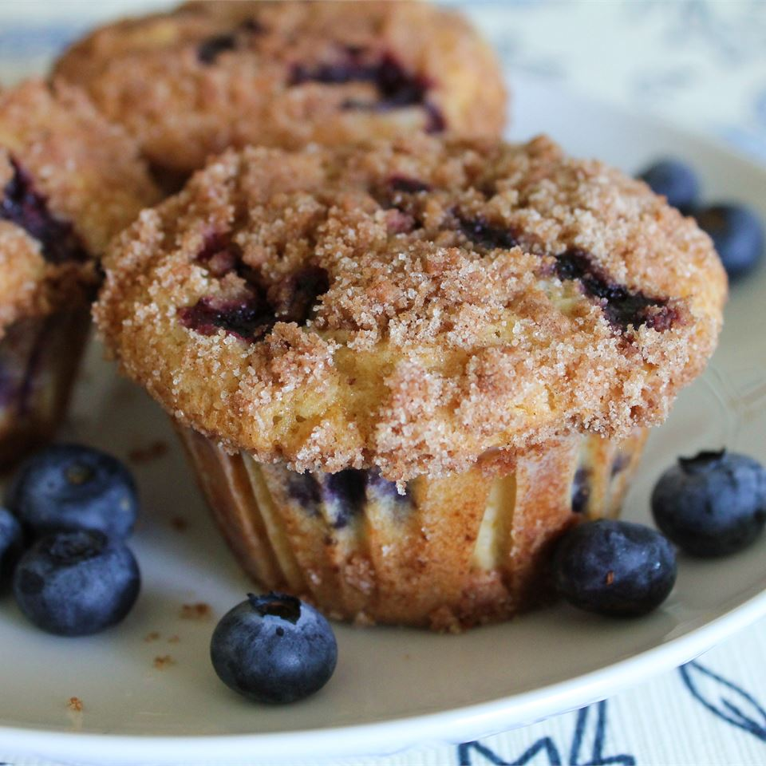

To Die For Blueberry Muffins

Description
These muffins are extra large and yummy with the sugary-cinnamon crumb topping. I usually double the recipe and fill the
muffin cups just to the top edge for a wonderful, extra-generously-sized, deli-style muffin. Add extra blueberries too, if you
want!
Ingredients
Muffins:
- 1½ cups all-purpose flour
- ¾ cup white sugar
- 2 teaspoons baking powder
- ½ teaspoon salt
- ⅓ cup vegetable oil
- 1 egg
- ⅓ cup milk, or more as needed
- 1 cup fresh blueberries
Crumb Topping:
- ½ cup white sugar
- ⅓ cup all-purpose flour
- ¼ cup butter, cubed
- 1½ teaspoons ground cinnamon